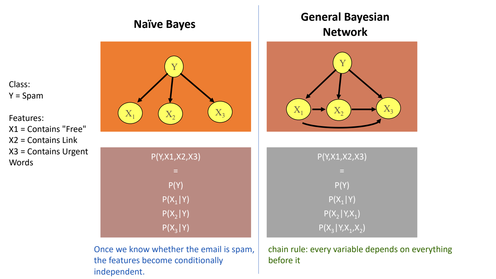

Naive Bayes（樸素貝氏法；給定類別後特徵獨立） and conditional independence（條件獨立；已知條件後互不提供額外資訊）
Naive Bayes scores each class（類別；分類目標） using its prior（先驗機率；看證據之前） probability（機率） and the likelihood（概似度） of the observed feature（特徵；描述樣本的屬性） values. It assumes features are conditionally independent（獨立；知道一者不改變另一者機率） given the class, not independent in the whole dataset.
Main distinction: Naive Bayes is a special Bayesian network
Naive Bayes（樸素貝氏法）: once the class is known, the features are assumed independent of one another. A general Bayesian network（一般貝氏網路） can represent additional dependencies. Both use probabilities; “naive” names the simplifying assumption, not a different Bayes’ theorem.
| Question | Naive Bayes | General Bayesian network |
|---|---|---|
| Typical structure | One class Y → each feature X₁, X₂, X₃. No feature-to-feature arrows. | A directed acyclic graph chosen for the problem; it can include feature-to-feature links and other variable structures. |
| Key assumption | X₁, X₂, X₃ are independent GIVEN Y. | Independence follows the chosen graph. It does not impose Naive Bayes’s class-conditioned feature independence on every model. |
| Required probabilities | Class prior P(Y), plus each feature’s P(Xᵢ | Y). | For each node, P(node | its parents); a root has a prior. |
| Training/data | Usually fewer parameters and simple frequency estimates. | Additional parents can create more CPT rows and need more data or expert knowledge. |
| Inference | For each class: prior × feature likelihoods; compare or normalize. | Multiply local factors; sum over unobserved variables; normalize the query if needed. |
| Trade-off | Simple and efficient, but dependent features may be counted as separate evidence. | Can represent those dependencies, but structure, estimation and inference may be more demanding. |
Same example: what changes?
Lecture spam example: Y=Spam; X₁=contains “Free”; X₂=contains a link; X₃=contains urgent words.
Naive Bayes: Y → X₁; Y → X₂; Y → X₃ P(Y,X₁,X₂,X₃) = P(Y)P(X₁|Y)P(X₂|Y)P(X₃|Y) One general-network structure shown in the lecture: P(Y,X₁,X₂,X₃) = P(Y)P(X₁|Y)P(X₂|Y,X₁)P(X₃|Y,X₁,X₂)
The general expression can account for feature dependencies. It is one example structure, not a requirement that every Bayesian network connect every earlier variable.
Do not say: “the features are always independent.” The Naive Bayes assumption is independence after conditioning on the class; the features may still be related overall.
Exam choice: give the mechanism, not only the name
- Classify from a table of labelled feature counts: Naive Bayes is a simple candidate. State the conditional-independence assumption and show prior × likelihoods. This matches the method used for 5002 sample Q2(d).
- Represent several dependent uncertain variables: consider a general Bayesian network. Draw justified dependencies, supply/learn CPTs and identify evidence versus the query.
- Features are dependent even within a class: explain why Naive Bayes’s assumption is questionable. A general network may represent the dependency, but you must justify the added structure and how its probabilities are obtained.
Short exam answer: “Naive Bayes is a restricted Bayesian network with a class node connected to its features. It assumes the features are conditionally independent given the class, so only P(Y) and P(Xᵢ|Y) are needed. A general Bayesian network can encode more dependencies, using a CPT for each node given its parents; this is more flexible but can require more parameters and more complex inference.”
Original lecture comparison slide

Lecture basis: MR-Day 2_JR_v1.pdf · PDF pp.78–82; structure/parameter-learning trade-offs p.84. The explanation extracts the practical difference rather than replacing the source with a slide copy.
Formula and symbols
- C_k
- Candidate class/cause k.
- x_j
- Observed value of feature j.
- P(C_k)
- Class prior: class count divided by all training cases.
- P(x_j | C_k)
- Feature likelihood: within-class count for that value divided by class count (with smoothing if specified).
- s_k
- Unnormalized score; multiply the prior by ALL feature likelihoods.
- ∑ s_l
- Sum of scores over all candidate classes; divide by this only when a posterior is required.
- d
- Number of observed features.
Assumption: features are conditionally independent GIVEN the class. To choose a class, compare scores; to report a probability, normalize them.
Interpret the result: Predict Mistracking under conditional independence given the cause.
Compute both fault posteriors
Worked study example: Sample Q2(d): five Carryback cases and four Mistracking cases. For Fair vibration（振動；來回震動的訊號） and Low acoustic（聲學的；與聲音量測有關）, the supplied within-class counts give likelihoods1/5 and3/5 for Carryback,2/4 and2/4 for Mistracking.
| Cause | Prior × likelihoods | Normalized probability |
|---|---|---|
| Carryback | (5/9)×(1/5)×(3/5)=1/15 | (1/15)/(1/15+1/9)=0.375 |
| Mistracking | (4/9)×(2/4)×(2/4)=1/9 | (1/9)/(1/15+1/9)=0.625 |
| Sum of class scores | 1/15+1/9=8/45 | Probabilities sum to1 |
| Decision | 0.625>0.375 | Predict Mistracking |
What this tells us: The more common cause before observation was Carryback, but the observed combination favors Mistracking strongly enough to reverse that prior preference.
Numbers come from sample Q2(d); lecture pages provide the Bayes and Naive Bayes method.
Original teaching illustration; illustrative values unless stated; source context below · S-PSUPR Day1b.pdf · PDF p.33, 34, 35, 36, 37, 38
Naive Bayes: calculate, compare, then normalize if asked
- Bayes classification（分類；預測類別） reverses the question from “how likely is this sensor reading under a cause?” to “how likely is the cause after this reading?” The prior captures cause frequency before the new evidence（證據；已觀察到的資訊）; likelihood captures evidence frequency within each cause.
- Naive Bayes multiplies feature likelihoods under conditional independence given the cause. It does not claim vibration and sound are independent across the full dataset; both can vary together because they share a cause.
- For ranking（排序） classes, the evidence denominator is common and can be omitted. To report actual posterior percentages, normalize the class scores; unnormalized scores such as1/9 are not already the final class probabilities.
Implementation steps and their purpose
- Count each class to obtain priors
- Estimate feature likelihoods within each class
- Multiply prior by the relevant（相關性；是否切合問題） likelihoods
- Compare class scores
- Normalize by the sum of scores if actual posterior probabilities are requested
Diagnose: One unseen sensor category makes a cause impossible
| What you observe | Why it happens | What to change | Why that helps |
|---|---|---|---|
| One unseen sensor category makes a cause impossible | A zero likelihood annihilates the product | Apply consistent Laplace smoothing where appropriate | Finite training（訓練） absence need not mean（均值；平均數） a physically impossible reading. |
Common wrong answers and the exact correction
- The common evidence denominator cancels only for class ranking
- Likelihood and posterior have opposite conditioning directions.
Where this is tested in the sample papers
ISY5002 Q2(d) — Naive Bayes from categorical maintenance records
What the question requires
- Count class priors from the nine records.
- Count Fair vibration and Low acoustic within each class.
- Multiply prior and likelihoods under the stated conditional-independence assumption.
- Normalize the two scores and select the higher class.
Proposed answer points
- Carryback: (5/9)×(1/5)×(3/5)=1/15. Mistracking: (4/9)×(2/4)×(2/4)=1/9.
- Normalize: Carryback=0.375; Mistracking=0.625. Predict Mistracking under the Naive Bayes model.
Avoid: Independence is conditional on cause, not unconditional independence of sensors. No zero counts occur in these two likelihoods; smoothing is not required to reproduce this calculation.
Full question-to-concept map →